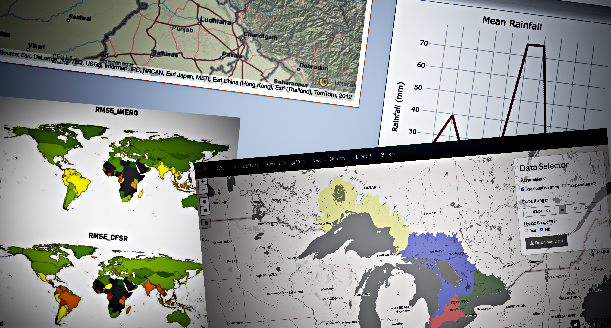

I help managers of water and the environment in making data-driven decisions !
9+ years of research, consulting and industry experience in data science, optimization and machine learning with applications in climate, water, energy and the environment.
Passionate about applying machine learning and optimization methods and creating informative visualizations to draw and communicate insights from environmental data.
Current and prior affiliations include University of Guelph, National University of Singapore, NESPAK and Cornell University.
I create sophisticated climate analytics and data applications by leveraging climate data (historical and future) from open-source web services (e.g., OPeNDAP, GDS, ESGF etc.)
Data Engineering
I am adept at creating data pipelines and dashboards for decision support in water and climate applications. Some data engineering tools that I frequently use include PostgreSQL, Airflow, Docker and R shiny.
Algorithms
I specialize in developing Machine Learning (ML) and parallel optimization algorithms for environmental applications. ML areas of expertise include spatio-temporal forecasting and heuristic optimization.
Water Consulting
I have strong domain expertise in hydrology and water resources engineering, and also provide water consulting, especially when linked with hydroinformatics and water resource management.
Modeling and Analysis of Extreme Events and Environmental Time-Series
Let's Get In Touch!
I am interested in new and exciting work opportunities. Lets connect via email or linkedin!
Climate Analytics
Data apps for hydrology and environmental science

Good quality climate data is available in abundance via multiple platforms and resources (e.g., NASA Earthdata, ESGF, etc.). However, leveraging such data can be a barrier and challenge for environmental scientists. I have created numerous web applications that source, interpret and manage climate data for applicable use in hydrology and earth sciences. These applications incorporate data pipelines that periodically access climate data from numerous sources (e.g., see my blog post on accessing NASA’s earthdata).
Can-GLWS is a Data as a Service (DaaS) platform I co-developed that allows application users to download SWAT-ready climate data (historical, climate change scenarios and weather statistics) of a pre-specified region within the Canadian Great Lakes watersheds. SWAT is a highly popular tool for hydrologic and watershed modelling.
The APWS application provides weather statistics for the Asia Pacific region that can be used in WXGN weather generator, for generating synthetic weather time-series for any location (or multiple locations) in the Asia Pacific region.
The technology stack used for developing these applications includes R Shiny, PostgreSQL, Python, Apache Airflow and Docker.
Optimization
Algorithms and Mathematica Models for Calibration, Hyperparameter Tuning and Water Management
I specialize in developing novel and efficient heuristic and surrogate optimization algorithms for applications in model calibration, hyperparameter tuning of Deep Neural Networks and environmental management. In my current and prior optimization projects I have developed and applied numerous such algorithms and also large-scale mathematical models (e.g., Linear and Non-Linear Programming), to environmental and computer science applications.
GOMORS is a surrogate-assisted Multi-Objective Optimization (MO) algorithm, designed for computational expensive MO problems, e.g., expensive environmental simulation optimization problems, hyperparameter tuning of Deep Neural Networks etc. It is implemented in the pySOT library (python) and framework, and uses Radial Basis Functions (RBFs), as surrogates.
HORD is an efficient optimization method designed for hyperparameter optimization of Deep Learning (DL) algorithm. HORD has been extensively evaluated on DL benchmarks and performs well in comparison to popular Bayesian optimization methods. It is implemented in the pySOT library (python), and applied to DL problems implemented in torch, with tests conducted on GPUs.
The technology stack I use for optimization includes numerous python libraries, e.g., pySOT , platypus , pyomo , scikit-learn and scipy etc.
Machine Learning
Applications in earth sciences and spatio-temporal forecasting
Earth science datasets and data acquisition tools are readily available in abundance these days and present novel opportunities for application of Machine Learning (ML) to unearth patterns and derive insights. I apply ML methods to open earth science datasets with application focus in hydrology, watershed management and soil classification. While my primary ML work relates to data exploration and model building, training & testing, I also provide assistance in pushing models into production.
Streamflow Prediction: I am currently testing different supervised machine learning algorithms for modeling streamflow in Ontario’s (Canada) catchments. Observed streamflows from across Ontario are being used in training and testing, whereas input features include observed weather, land-surface and land-use data. Comparison algorithms include XGBoost, Random Forests, LSTM networks and Convolution Neural Networks (CNN). This work is being conducted in collaboration with Greenland Consulting . The selected model will be pushed into production within Greenland’s THREATS platform.
Watershed Quality Prediction: Predicting how river quality is affected by agricultural practices and land-use is a major challenge that typically requires development of highly complex watershed simulation models. Working within an interdisciplinary project focused on developing agricultural management plans for reducing phosphorus in Ontario’s watersheds, I am developing a Machine Learning algorithm for predicting river water quality in response to agricultural management. This ML method will act as a surrogate for the highly intricate physical watershed model, SWAT, and thus, is being trained on the output of SWAT.
The technology stack I use in machine learning includes scikit-learn, xgboostkeras and pytorch.
Dashboards
Data Pipelines, DataViz and Decision Support Systems for Water and Energy Management
I develop informative dashboards and Decision Support Systems (DSS) to derive insights from environmental data and models. My specialization within dashboard and DSS development is web scraping, data pipelining, DataViz and deployment.
GSAT-PK is an on-going collaborative open source project, initiated to develop a DSS for approximating and disseminating snow & glacial storage and river flow information of selected catchments within the transboundary Indus Basin. GSAT-PK relies completely on open-source data (e.g., satellite imagery from NASA’s MODIS dataset) to model latest snow cover and storage status. Moreover, latest river flow data is gathered via web scraping. Apache airflow is used to manage and maintain the entire GSAT-PK data pipeline that includes data processing and modeling scripts developed in python and R. Data visualizations and dashboard are developed in plotly and R shiny, whereas the DSS is dockerized and deployed on a DigitalOcean droplet.
CANWET-SWAT is a data visualization tool designed specifically to analyze the spatio-temporal outputs of the SWAT watershed modeling tool. SWAT is a highly complex watershed model with numerous spatio-temporal outputs. CANWET-SWAT uses flask APIs to export these outputs into a PostgreSQL / PostGIS database. DataViz APIs are then used to export outputs from the database into CANWET-SWAT’s data visualization interface (developed in the THREATS system). CANWET-SWAT is being developed as a collaboration between University of Guelph and Greenland Consulting, with my work centered on development of the APIs for data import and visualization.
Pakistan’s Groundwater-Energy Nexus Exploration is an interactive data visualization and exploration application developed to understand the impact of electric tubewell pumping on Pakistan’s water-energy nexus. The application is developed using streamlit and plotly, whereas data is sourced from multiple public reports and repositories.
The technology stack I use in DSS and dashboard development includes Flask, PostgreSQL, PostGIS, plotly, R Shiny, Apache Airflow, streamlit, Docker and DigitalOcean Droplet.
Parallel Programming
Frameworks to Speed-up Models and Algorithms
I am adept at developing programming frameworks for parallelization of complex workflows and optimization algorithms. I have extensive experience of developing parallel (synchronous and asynchronous) codes in C, python and R, and have worked with numerous parallelization libraries including multiprocessing, mpi4py & POAP in python, and snow & parallel in R.
SOP is a surrogate-assisted efficient parallel optimization algorithm, specifically designed for optimization of expensive problems on multi-node clusters. The algorithm achieves good parallel speed-up on up to 64 cores, and is implemented within the pySOT library in python.
LCC-SWAT is a cloud-based calibration and uncertainty analysis system, designed for calibration of SWAT models. The calibration system is deployed on a server within University of Guelph (UoG), and can be easily accessed by UoG modelers, via a web-interface, to fast-track their SWAT model development and calibration workflows.
The technologies and libraries I use in parallel programming include MPI, mpi4py, POAP , snow (R) and parallel (R).
Statistical Analysis
Modeling and Analysis of Extreme Hydrologic & Climate Events and Environmental Time-Series
My suite of expertise also includes statistical modeling and analysis, with application focus in environmental science and hydrology. My prior experience in statistical modeling and analysis includes (but is not limited to) Extreme Value Analysis (EVA) in hydrology, time-series imputation (for sensor data), statistical drought analysis, statistical downscaling and time-series trend analysis.
Drought Early Warning: This work, done in collaboration with the Global Change Impact Studies Centre (GCISC) Pakistan, devised a statistical framework for early prediction and monitoring of droughts within Pakistan. Using cross-correlations between standardized statistical indices of hydrologic and meteorologic patterns, numerous insights were derived for early warning against droughts in rivers within Pakistan.
Hazard Indexes in Hydrology: This is an on-going project for Greenland group, where I am co-developing (with collaborators from Greenland) hazard indices for identifying floods and droughts, using predicted streamflow data. Using Extreme Value Analysis (EVA) and flood frequency analysis, we are developing statistical indices for quantifying and qualifying magnitudes of flood and drought events from predicted streamflow data. The developed indices will be integrated into Greenland’s THREATS system.
The technology stack I use for statistical modeling and analysis includes numerous python libraries, e.g., scikit-learn, scikit-extremes and statsmodels etc.